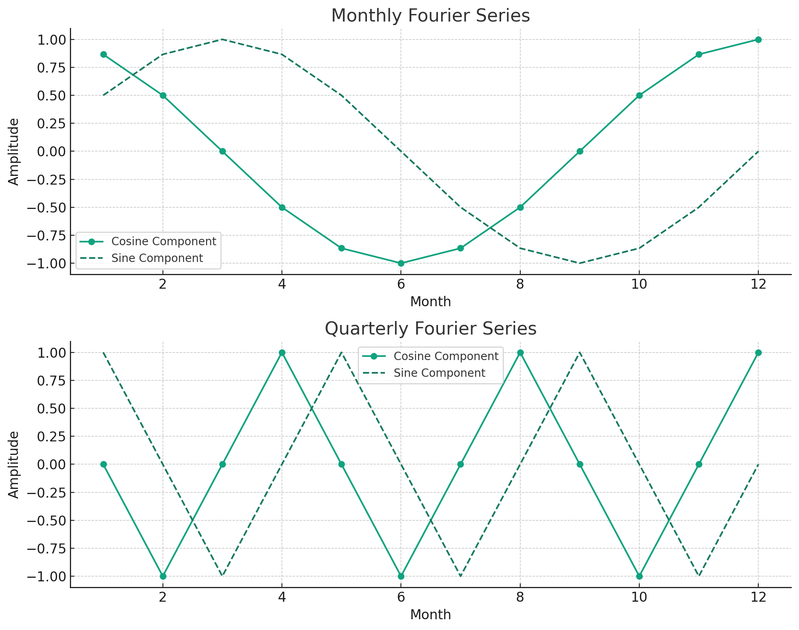
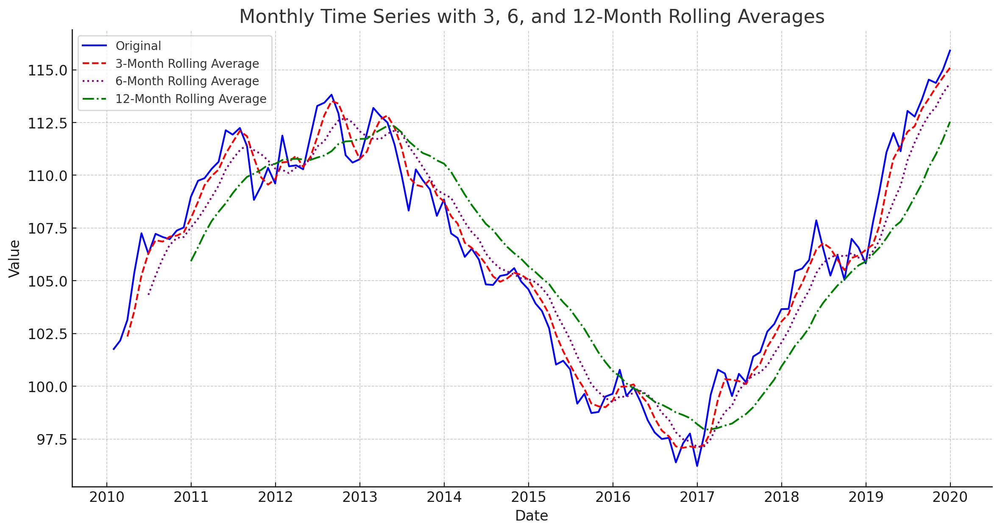
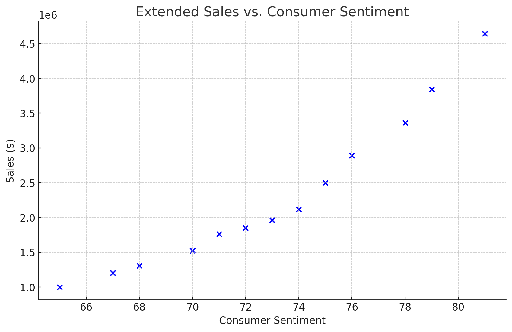
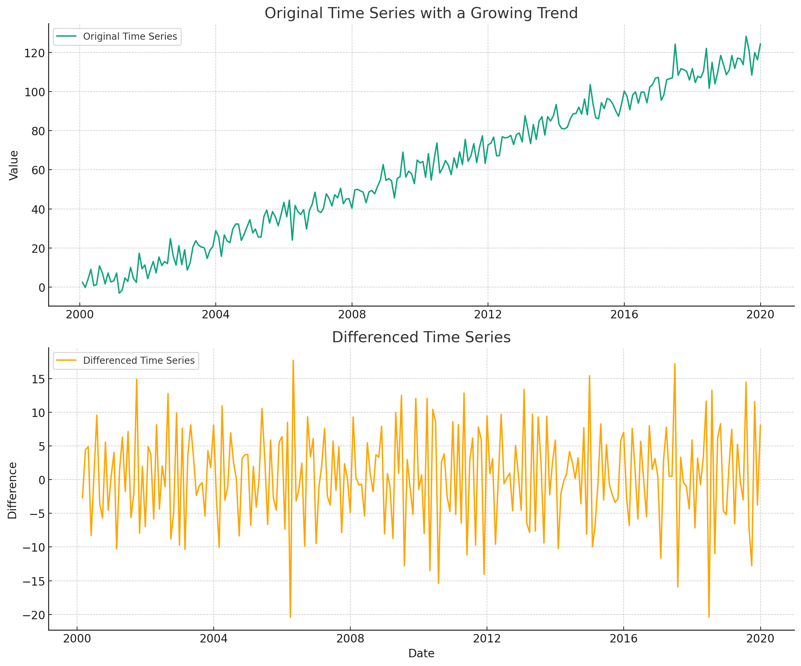
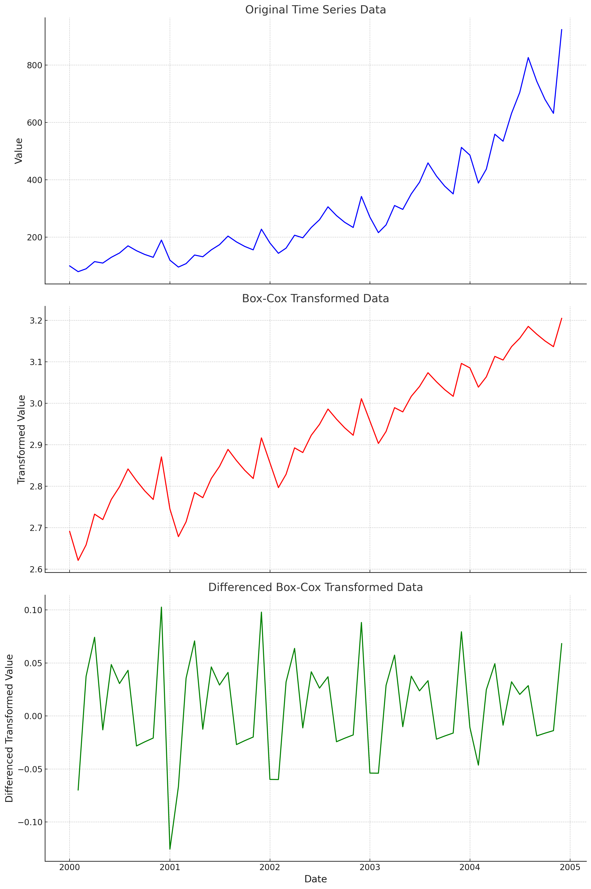

Time Series First Principles Series
This post dives into the sixth principle of a good time series forecast, the magic is in the feature engineering. Check out the initial post in this series to get a high level view of each principle.
- Domain Expertise
- Garbage In Garbage Out
- The Future Is Similar To The Past
- Higher Grain Higher Accuracy
- Order Is Important
- The Magic Is In The Feature Engineering
- Simple Models Are Better Models
- Capture Uncertainty
- Model Combinations Are King
- Deep Learning Last
Turning Data Into Insight
A machine learning (ML) model is only as good as the data it’s fed. The process of transforming data, to make it easier for a model to learn from that data, is called feature engineering. It’s a technical term that is actually very simple in nature, really just data transformations. In the world of time series forecasting, feature engineering can make or break a good forecast.
Creating high quality features is a combination of strong domain expertise and data transformation skills. We have already covered how domain expertise impacts a forecast in a previous post, so this post will cover how simple data transformations can drastically improve the accuracy of a machine learning forecast. Check out each category of time series feature engineering below to learn more.
Date Features
The most common type of feature engineering for time series is around dates. Date features allow us to capture seasonality patterns in our data. Think of seasonality as repeating peaks and valleys in our data. For example, our business might make most of its revenue in Q4 every year, with a subsequent dip in sales in Q1.
Let’s use the example time series below to illustrate each type of feature engineering.
| Date | Sales ($) | Consumer Sentiment |
|---|---|---|
| January 2023 | 100,000 | 68 |
| February 2023 | 110,000 | 67 |
| March 2023 | 120,000 | 65 |
| April 2023 | 115,000 | 70 |
| May 2023 | 130,000 | 72 |
| June 2023 | 125,000 | 73 |
| July 2023 | 135,000 | 74 |
| August 2023 | 140,000 | 75 |
| September 2023 | 130,000 | 70 |
| October 2023 | 145,000 | 72 |
| November 2023 | 150,000 | 71 |
| December 2023 | 160,000 | 75 |
In this time series we would like to forecast monthly sales. We also have information about consumer sentiment that we can use to help forecast sales. A multivariate machine learning model cannot easily use the date column as is, so we have to do some data transformations (aka feature engineering) to make it easier for a model to understand how date information can help predict sales. Let’s go through a few examples of new features we can create from the date column. It’s important to note that after we create these new features it’s a good idea to remove the original date column before training a ML model.
Since the data is monthly there are a lot of simple features we can use. We can pull out the specific month, quarter, and even year into their own columns to use as features. If our data was at a daily level, we can even go deeper and get features related to day of the week, day of year, week of month, etc.
| Date | Month | Quarter | Year |
|---|---|---|---|
| January 2023 | January | Q1 | 2023 |
| February 2023 | February | Q1 | 2023 |
| March 2023 | March | Q1 | 2023 |
| April 2023 | April | Q2 | 2023 |
| May 2023 | May | Q2 | 2023 |
| June 2023 | June | Q2 | 2023 |
| July 2023 | July | Q3 | 2023 |
| August 2023 | August | Q3 | 2023 |
| September 2023 | September | Q3 | 2023 |
| October 2023 | October | Q4 | 2023 |
| November 2023 | November | Q4 | 2023 |
| December 2023 | December | Q4 | 2023 |
That seems pretty straight forward right? Let’s keep squeezing our date fruit for more juice and see what other kinds of features we can create. Since this is a time series, adding some order of time can be helpful. This can be something as simple as an index starting at 1 (or even convert your date to a seconds format). This helps establish the proper order of our data and makes is easier for a model to pick up growing or declining trends over time. There is also slight differences in how many days there are from month to month, so we can add that too. If you don’t think that’s important then you have never been stung by the harsh mistress that is leap year. There have been multiple times where finance exec’s have dismissed forecasts for the quarter that includes February, where in the end we didn’t account for the fact that it was a leap year or we are one year removed from one. You can even take this one step further and add the number of business days for each month.
| Date | Index | Days in Month | Business Days |
|---|---|---|---|
| January 2023 | 1 | 31 | 22 |
| February 2023 | 2 | 28 | 20 |
| March 2023 | 3 | 31 | 23 |
| April 2023 | 4 | 30 | 20 |
| May 2023 | 5 | 31 | 23 |
| June 2023 | 6 | 30 | 22 |
| July 2023 | 7 | 31 | 21 |
| August 2023 | 8 | 31 | 23 |
| September 2023 | 9 | 30 | 21 |
| October 2023 | 10 | 31 | 22 |
| November 2023 | 11 | 30 | 22 |
| December 2023 | 12 | 31 | 21 |
To get the final drop of juice out of the date column, we can also add Fourier series features. A Fourier series feature in time series forecasting is a component that captures seasonal patterns using sine and cosine functions to model periodic cycles in the data. In a nutshell they are just recurring peaks and valleys that can occur at various date grains like monthly or daily. These features can help capture more complex seasonality in your data. The chart below shows some standard Fourier series at the monthly and quarterly grain.

Lag Features
Time series forecasting is all about learning from the past to forecast the future. In order to learn about the past we have to create lags on our data. Often what we’re trying to forecast today is correlated to what happened in the past. This is a concept known as autocorrelation. For our monthly forecast example, a 3 month lag may be highly correlated to sales with a 0 month lag (or sales today). Consumer sentiment can also be correlated with sales, but this time a lag of 6 might have higher correlation, since there is most likely a long delay between customer purchase patters and how it affects our company’s product. Lags can be created for any amount, depending on your domain knowledge of the business and results from more exploratory data analysis (deep dive for a different day).
| Date | Sales ($) | Consumer Sentiment | Sales 3-Month Lag | Sentiment 6-Month Lag |
|---|---|---|---|---|
| January 2023 | 100,000 | 68 | ||
| February 2023 | 110,000 | 67 | ||
| March 2023 | 120,000 | 65 | ||
| April 2023 | 115,000 | 70 | 100,000 | |
| May 2023 | 130,000 | 72 | 110,000 | |
| June 2023 | 125,000 | 73 | 120,000 | |
| July 2023 | 135,000 | 74 | 115,000 | 68 |
| August 2023 | 140,000 | 75 | 130,000 | 67 |
| September 2023 | 130,000 | 70 | 125,000 | 65 |
| October 2023 | 145,000 | 72 | 135,000 | 70 |
| November 2023 | 150,000 | 71 | 140,000 | 72 |
| December 2023 | 160,000 | 75 | 130,000 | 73 |
Last thing I’ll say here is that you can also create leading features, especially for features that you know with 100% certainty ahead of time. For example, customers knowing of a new product launch in the future will definitely change how they purchase similar products you sell for the periods leading up to the launch. Someone may hold off on buying a new iPhone until the latest one gets released in a few months. Same goes for cars and many other products.
Rolling Window Features
Often using pure historical lags is not enough. The historical data of our target variable (what we want to forecast) can be very noisy, making it hard for a model to learn the proper trends and seasonality. One way to handle this is through rolling window transformations.
Rolling window features in time series forecasting help smooth out data, reduce noise, and capture essential trends and cycles by averaging or computing other statistics over a specified period. For a monthly forecast we can create rolling window features of averages, min/max, and other statistical calculations.
- 
-
Rolling Window Averages aka Moving Average
It’s best to calculate rolling window features based on your existing lag features. That way there is no data leakage during initial model training. See below for example of creating a 3 month rolling window average of the 3 month sales lag.
| Date | Sales ($) | Sales 3-Month Lag | 3-Month Rolling Avg |
|---|---|---|---|
| January 2023 | 100,000 | ||
| February 2023 | 110,000 | ||
| March 2023 | 120,000 | ||
| April 2023 | 115,000 | 100,000 | |
| May 2023 | 130,000 | 110,000 | |
| June 2023 | 125,000 | 120,000 | 110,000 |
| July 2023 | 135,000 | 115,000 | 115,000 |
| August 2023 | 140,000 | 130,000 | 121,667 |
| September 2023 | 130,000 | 125,000 | 123,333 |
| October 2023 | 145,000 | 135,000 | 130,000 |
| November 2023 | 150,000 | 140,000 | 133,333 |
| December 2023 | 160,000 | 130,000 | 135,000 |
Polynomial Features
The final type of feature engineering I’d like to discuss are polynomial transformations. Sometimes there is a non-linear relationship between your initial feature and the target variable. Some models, like ones that use decision trees, can handle this kind of relationship while others like linear regression cannot. To fix this we can transform the data via polynomials like squaring, cubing, and even taking the log of the initial feature.
Let’s take our example monthly sales data and add some spice to it. This time creating an exponential relationship between consumer sentiment and sales.
| Date | Sales ($) | Consumer Sentiment |
|---|---|---|
| January 2023 | 1,309,000 | 68 |
| February 2023 | 1,204,000 | 67 |
| March 2023 | 1,000,000 | 65 |
| April 2023 | 1,525,000 | 70 |
| May 2023 | 1,849,000 | 72 |
| June 2023 | 1,964,000 | 73 |
| July 2023 | 2,121,000 | 74 |
| August 2023 | 2,500,000 | 75 |
| September 2023 | 1,525,000 | 70 |
| October 2023 | 1,849,000 | 72 |
| November 2023 | 1,764,000 | 71 |
| December 2023 | 2,500,000 | 75 |
| January 2024 | 2,890,000 | 76 |
| February 2024 | 3,361,000 | 78 |
| March 2024 | 3,844,000 | 79 |
| April 2024 | 4,641,000 | 81 |
When graphing the data, see how the increase in consumer sentiment has an exponential effect on sales?

To account for this, we can square the values of consumer sentiment and create a new feature to use. This new feature will make it easier for models like linear regression to capture these kinds of non-linear relationships.
| Date | Sales ($) | Consumer Sentiment | Consumer Sentiment Squared |
|---|---|---|---|
| January 2023 | 1,309,000 | 68 | 4,624 |
| February 2023 | 1,204,000 | 67 | 4,489 |
| March 2023 | 1,000,000 | 65 | 4,225 |
| April 2023 | 1,525,000 | 70 | 4,900 |
| May 2023 | 1,849,000 | 72 | 5,184 |
| June 2023 | 1,964,000 | 73 | 5,329 |
| July 2023 | 2,121,000 | 74 | 5,476 |
| August 2023 | 2,500,000 | 75 | 5,625 |
| September 2023 | 1,525,000 | 70 | 4,900 |
| October 2023 | 1,849,000 | 72 | 5,184 |
| November 2023 | 1,764,000 | 71 | 5,041 |
| December 2023 | 2,500,000 | 75 | 5,625 |
| January 2024 | 2,890,000 | 76 | 5,776 |
| February 2024 | 3,361,000 | 78 | 6,084 |
| March 2024 | 3,844,000 | 79 | 6,241 |
| April 2024 | 4,641,000 | 81 | 6,561 |
Reversal
Sometimes too much of a good thing can be a bad thing. Adding a lot of new features can increase the chance that a model overfits. Overfitting in machine learning occurs when a model learns to capture noise or random fluctuations in the training data, leading to poor generalization and high performance on training data but low performance on unseen data. The best way to prevent this kind of overfitting is to limit the number of features used to train a model. This will be discussed in greater detail in another post in this series.
Did you notice that when creating lags and rolling window features we had a lot of missing data at the start of the time series for those new features? This can be a problem. Some ML models do not like missing data, so we need to deal with those missing values. An easy way is to just drop the initial rows in the time series that have blank values for the new lags and rolling window features. This can work well if you have a lot of historical data. Dropping data can hurt model performance though, and if you don’t have a lot of data to start with it becomes a less favorable option. You could also replace the missing values, either by using a simple model to impute the value or just use the closest available value in the time series to “fill in” the missing values. Both of these missing value replacement approaches have their own pros and cons but could be a better strategy then just simply dropping rows with missing values.
| Date | Sales ($) | Sales 3-Month Lag | 3-Month Rolling Avg |
|---|---|---|---|
| January 2023 | 100,000 | 100,000 | 110,000 |
| February 2023 | 110,000 | 100,000 | 110,000 |
| March 2023 | 120,000 | 100,000 | 110,000 |
| April 2023 | 115,000 | 100,000 | 110,000 |
| May 2023 | 130,000 | 110,000 | 110,000 |
| June 2023 | 125,000 | 120,000 | 110,000 |
| July 2023 | 135,000 | 115,000 | 115,000 |
| August 2023 | 140,000 | 130,000 | 121,667 |
| September 2023 | 130,000 | 125,000 | 123,333 |
| October 2023 | 145,000 | 135,000 | 130,000 |
| November 2023 | 150,000 | 140,000 | 133,333 |
| December 2023 | 160,000 | 130,000 | 135,000 |
Other Pre-Processing
One thing I wanted to add that technically isn’t considered feature engineering are other data pre-processing methods. These are things you apply before you start your feature engineering process. They are specific to time series forecasting and can greatly improve forecast accuracy. Here are two pre-processing methods you should know about.
First is making your data stationary. This is a time series technical term that pretty much means removing the trend component of your data, where the time series has a constant mean and standard deviation. We can make a time series stationary by the process of differencing. This involves taking the difference between each date observation and using that as the new time series to train models with. Check out the example below. See how the upward trend gets removed when we simply use the difference between months instead of the original monthly values? Some machine learning models, like ones that rely on decision trees, cannot extrapolate trends. So differencing the data removes any trend pattern, making it a lot easier for these models to produce high quality forecasts.

Another pre-processing technique is a box-cox transformation. This helps remove any exponentially increasing trends by applying various types of power transformations. For example, taking the log of your time series. Removing non-linear trends can make it a lot easier for a model to create accurate forecasts. See the example below of a time series with a non-linear trend. We can then apply a box-cox transformation and then difference the data. See how nice the final time series looks? It will be way easier for a ML model to learn the patterns in the final transformed time series.

finnts
There’s a lot to unpack on feature engineering for time series forecasting. Thankfully my package, finnts, can automatically handle all of the feature engineering for you. It does everything I called out in this post plus more. Check it out and see just how easy ML forecasting can be.
Final Thoughts
Feature engineering is the backbone of successful time series forecasting, allowing models to uncover hidden patterns and relationships within the data, ultimately leading to more accurate predictions. By transforming raw data into meaningful features like date-related attributes, lag features, rolling window statistics, and polynomial transformations, we equip machine learning models with the necessary insights to make informed forecasts. However, it’s crucial to strike a balance between adding informative features and avoiding overfitting, as too many features can lead to poor generalization on unseen data. With careful consideration and the right techniques, feature engineering becomes a powerful tool in the arsenal of any data scientist or analyst aiming to unlock the predictive potential of time series data.